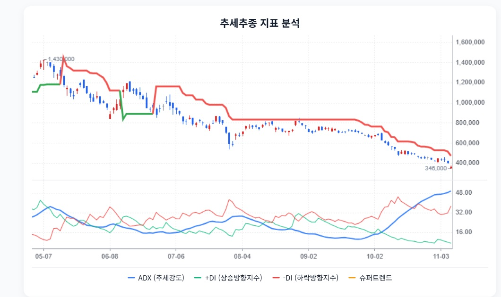

HD현대일렉트릭 · StockEasy 읽기용 정리
첨부 확인 2026-11-08 · 핵심 내용을 문단별로 재구성했습니다. 원문 전체 전사가 아니며, 차트는 첨부 화면에서 발췌했습니다. 원문의 매수·매도 표현과 가격 구간은 자동 매매 신호로 채택하지 않았습니다.
1. 최대 매출이어도 마진은 달라집니다
StockEasy 원문 요약 · 주장과 가정 포함
원문은 3분기 매출 1조 1,799억원·영업이익 2,845억원·영업이익률 24.1%를 제시합니다. 북미 인도 시점과 국내 BESS 매출 증가에 따른 제품 구성 변화가 분기 수익성에 영향을 줬다는 설명입니다.
2. 수주잔고는 취소 불가능한 현금이 아닙니다
StockEasy 원문 요약 · 주장과 가정 포함
원문은 수주잔고 88.4억달러와 북미 중심의 수주 구조, 약 1.1조원 규모 빅테크 패키지 계약을 성장 근거로 제시합니다. 취소 위약금·원가 연동·관세 부담의 세부 계약 조건은 미확인으로 남깁니다.
3. 증설 총예산과 남은 지출을 구분
StockEasy 원문 요약 · 주장과 가정 포함
원문은 울산·미국 앨라배마·청주 증설과 운전자금 부담을 설명하면서, 정확한 잔여 CAPEX는 공시에서 프로젝트별로 분리 확인되지 않았다고 밝힙니다.
선수금 유입으로 높았던 과거 현금 전환율이 투자 지출과 운전자금 증가로 낮아질 수 있다는 관점입니다.
4. 33만~39만원이 가치 바닥인지 따로 검증
StockEasy 원문 요약 · 주장과 가정 포함
원문은 정상화 EPS 28,000~36,000원과 PER 12~16배로 가치 구간을 구성하고, 보수적 구간 336,000~392,000원을 제시합니다. 기준 가격으로 2026년 11월 6일 366,500원을 사용합니다.
수주 취소·인도 이연·판가 인상 실패·경쟁 증설과 가격 하락을 가설 재검토 조건으로 제시합니다.
5. 과매도와 추세 회복은 다른 신호
StockEasy 원문 요약 · 주장과 가정 포함
원문은 RSI 등 단기 과매도와 강한 하락 추세가 동시에 관찰된다고 설명합니다. 346,750원 지지, 461,071원·730,864원 저항을 관찰 가격으로 제시합니다.

StockEasy 원문 발췌 · 첨부 당시 추세 지표. 실시간 시세/StockAgent 판정이 아닙니다.